what the hell is this
Ambassador Prospecting automates the discovery of qualified influencers to partner with for influencer marketing and streamlines what was previously a highly manual process spread across multiple tools. (, and enables the client to scale thier ambassador program faster) Building a community of ambassadors for organic marketing allows the client to deepen and extend customer relationships.
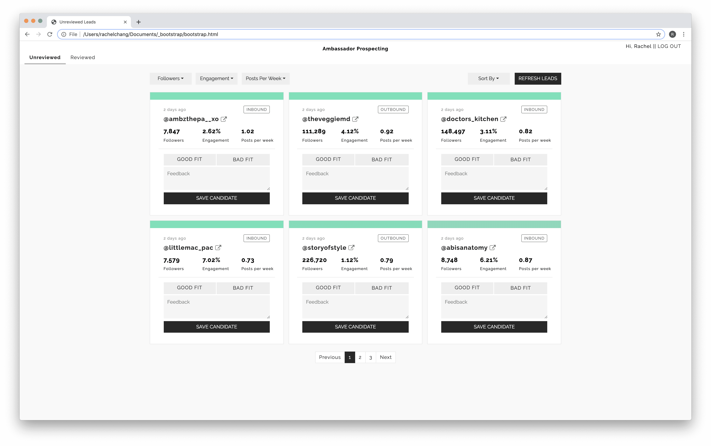
Preface & Research
The Ambassador Prospecting proof of concept(below) was designed to have the user evaluate the accuracy of the scoring engine. Once we were confident in the scoring engine, Ambassador Prospecting then became focused on enabling the client to discover and qualify leads faster.
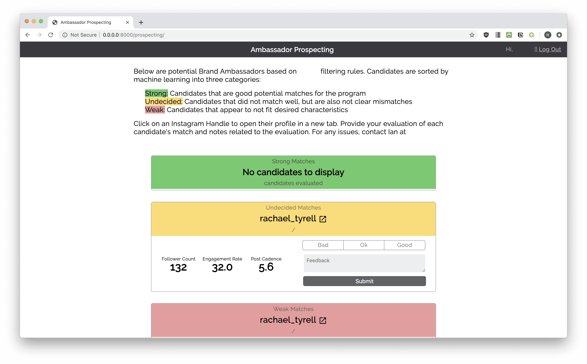
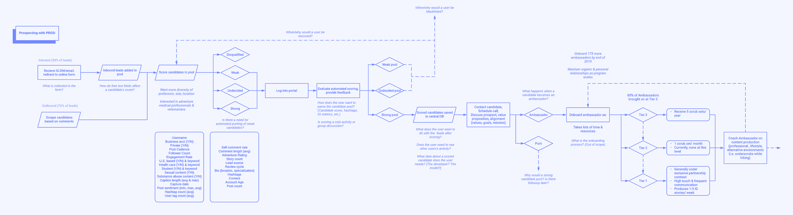
I first visualized the workflow (above) to identify my own knowledge gaps and any questions I needed to answered. I met with the primary user to discuss their current workflow, mental models, processes for evaluating leads, and any pain points to understand how Ambassador Prospecting could best deliver impact. From that conversation, my key takeaways were:
1) The workflow is spread across many tools
Outbond leads are saved in Instagram, free text notes, email, and spreadsheets. Inbound leads reach out through Instagram Direct Messages and emails, fill out a Google Form, and are reviewed and then copied into another spreadsheet.
Outbond leads are saved in Instagram, free text notes, email, and spreadsheets. Inbound leads reach out through Instagram Direct Messages and emails, fill out a Google Form, and are reviewed and then copied into another spreadsheet.
2) Scoring candidates is a binary decision
The proof of concept delivered "Strong," "Undecided," and "Weak" leads and the user scored them as "Good," "Okay," or "Bad" fits. However, in practice, an "Okay" candidate is passed over, due the volume of leads.
The proof of concept delivered "Strong," "Undecided," and "Weak" leads and the user scored them as "Good," "Okay," or "Bad" fits. However, in practice, an "Okay" candidate is passed over, due the volume of leads.
3) Main decision factors are engagement & follower metrics and content quality
While the inbound lead form involves many free text questions, these answeres are the last feature reviewed; other metrics are the main factors used to evaluate leads.
While the inbound lead form involves many free text questions, these answeres are the last feature reviewed; other metrics are the main factors used to evaluate leads.
I then laid out features according to the view they would exist in to prioritize and organize my workflow.
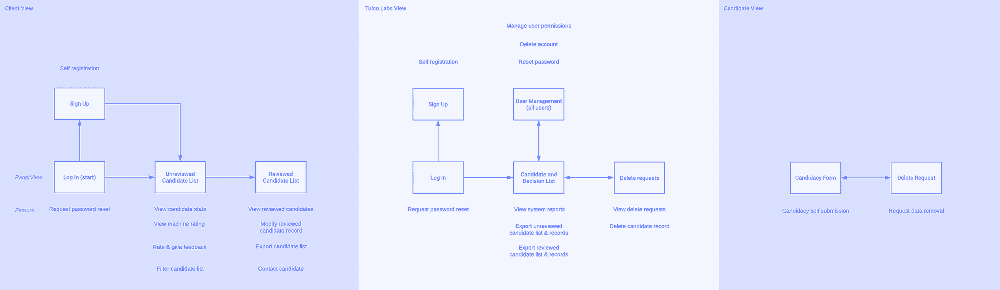
Iterations
I explored presenting candidates in different ways and with different types of information, such as Instagram bios and account age. Due to scraper limitations and best data practices, we decided to only display the main three metrics: Followers, Engagement Rate, and Post Cadence.
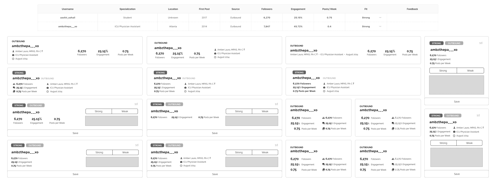
Card and table iterations
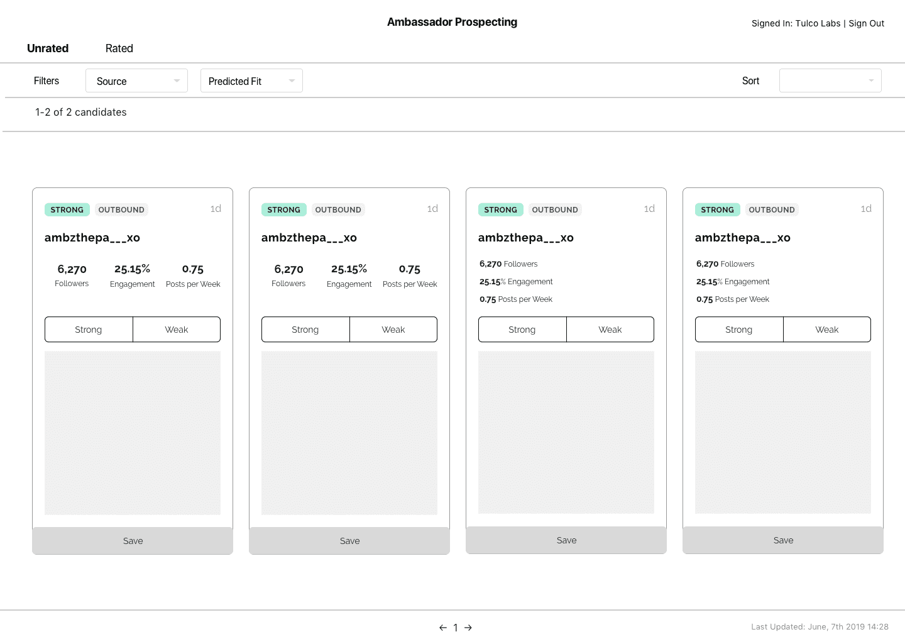
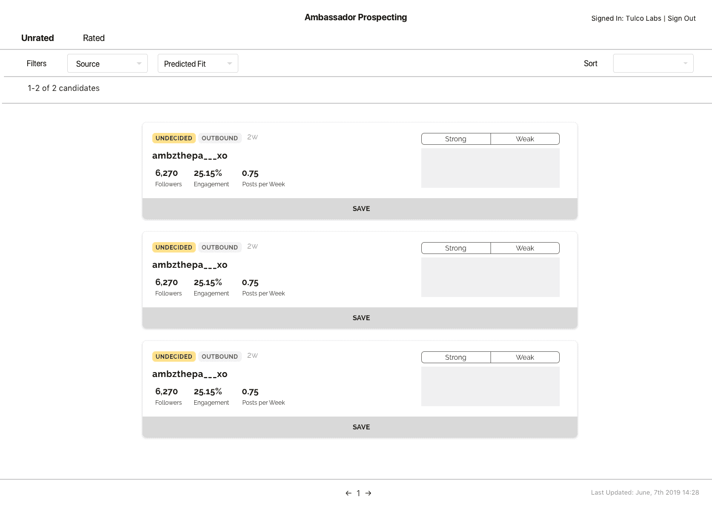
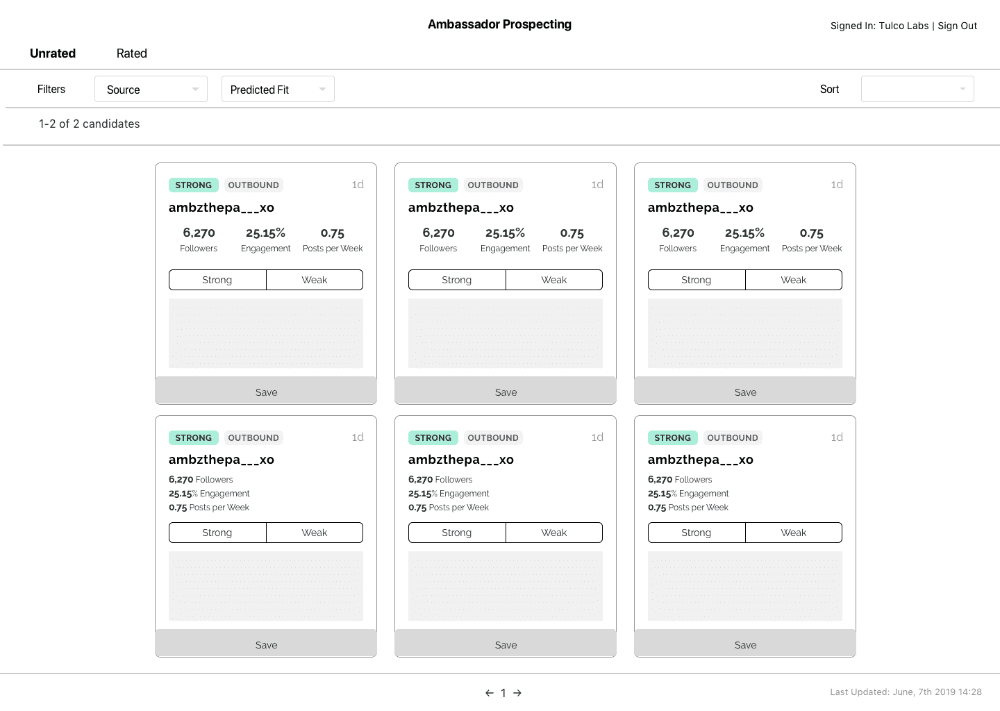
Layout iterations
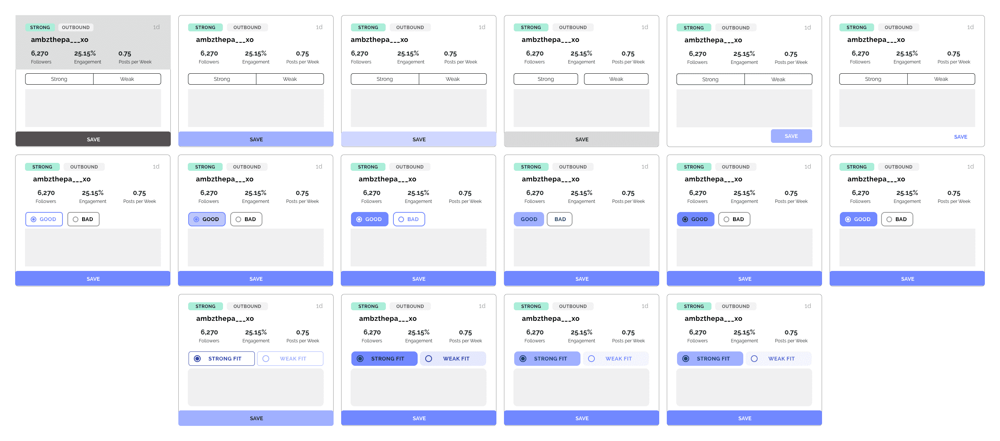
Color and scoring iterations
Building
I switched to working in HTML/CSS to get a better sense of code limitations as I designed and to accomodate a two week release cycle. Because time constraints forced us to reuse existing code, the first release (below) only allowed the user to see two cards at a time, similar to proof of concept version.
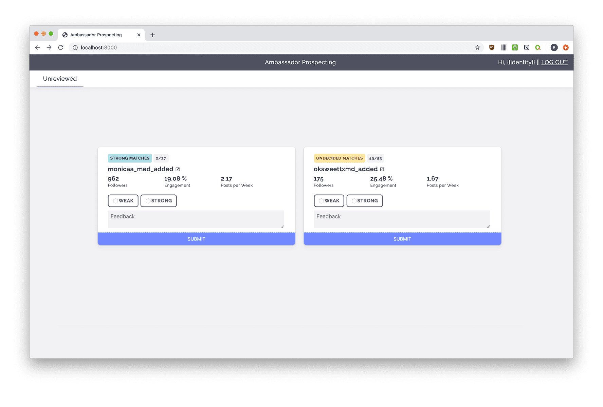
Later versions added the ability to sort and filter leads, infinite scroll to view more leads at once, and some usability tweaks.
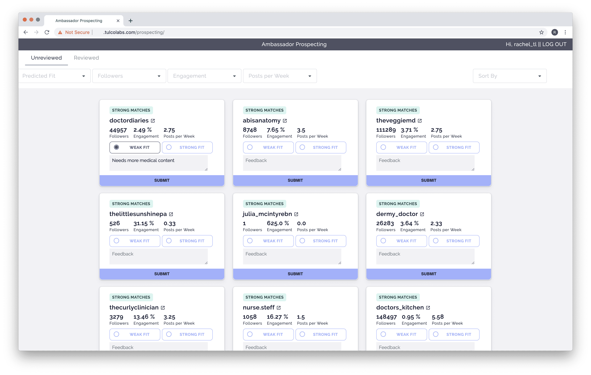
We would occasionally check user activity to ensure the scoring engine was accurate and noticed the client was only evaluating strong leads and none of the undecided leads. Undecided leads are still qualified but may have a slightly lower probability (85% or lower) of being a good fit. We switched to a gradient with twelve steps (below) to encourage more nuanced evaluation.
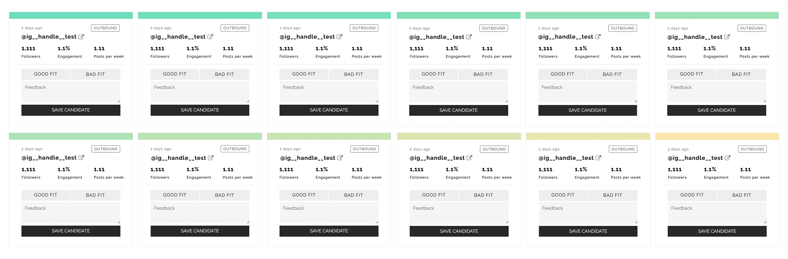
I also adjusted the visual language to better fit the client's existing brand. Below are the final screens.
Main unscored view
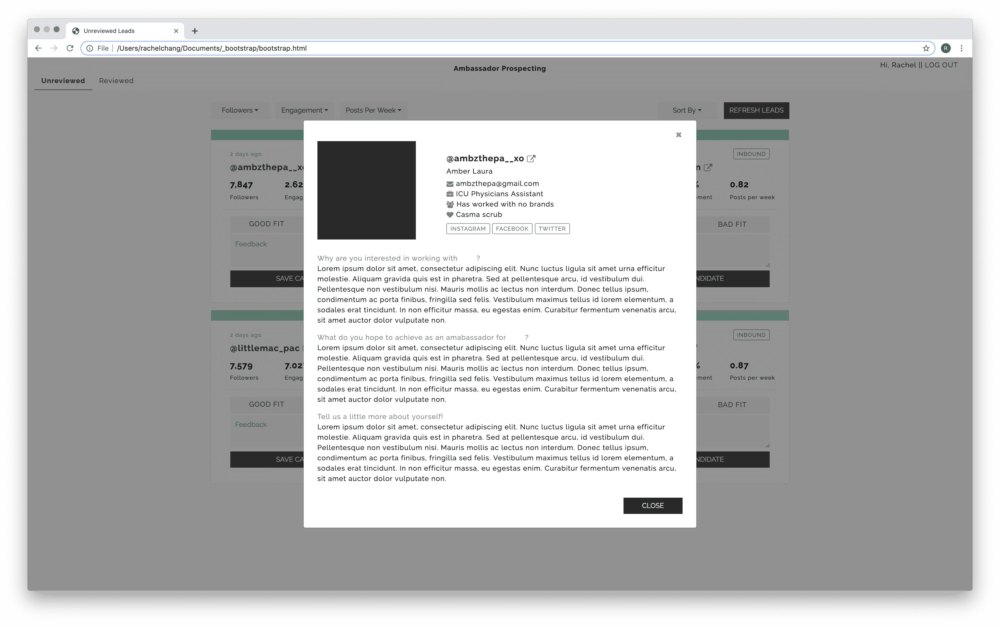
Expanded modal with inbound application responses
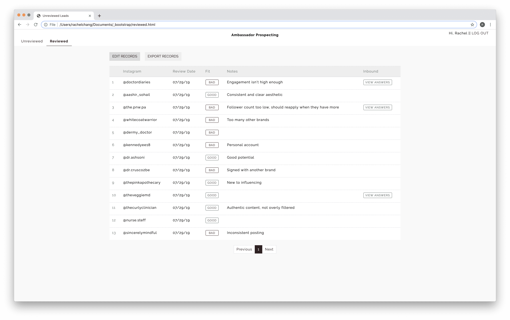
Scored leads
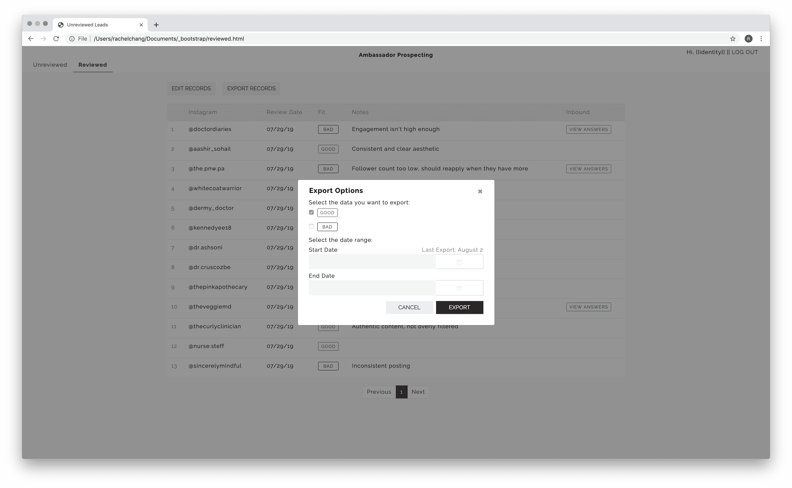
Exporting scored leads
< back